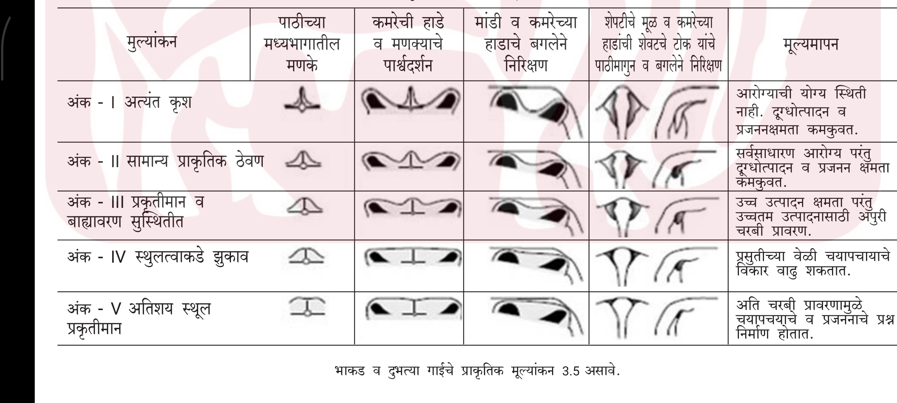

⬅️ मुख्य डॅशबोर्ड
शरीर स्थिती (BCS) ⚖️
जनावरांच्या आरोग्याचे आणि आहाराचे अचूक मापन
१. खालील चित्रावरून गाईचा स्कोअर ओळखा

BCS Image Placeholder (bcs.png)';">
चित्रातील हाडांच्या स्थितीवरून तुमच्या जनावराची तुलना करा.
जनावराची सध्याची अवस्था काय आहे?
दुभती (दूध देणारी)
आटवलेली (गाभण आणि दूध न देणारी)
कालवड (पहिली वेत येण्याआधी)
तुमच्या जनावराचा स्कोअर निवडा (१ ते ५):
-- स्कोअर निवडा --
१ - अतिशय अशक्त (हाडे स्पष्ट दिसतात)
२ - अशक्त (हाडे दिसतात पण थोडे मांस आहे)
३ - योग्य स्थिती / आदर्श (शरीर प्रमाणबद्ध)
४ - लठ्ठ (चरबीचे थर, हाडे अजिबात दिसत नाहीत)
५ - अतिलठ्ठ (चालताना त्रास, अति चरबी)
🤖 AI विश्लेषण करा
📋 AI आरोग्य अहवाल व आहार सल्ला